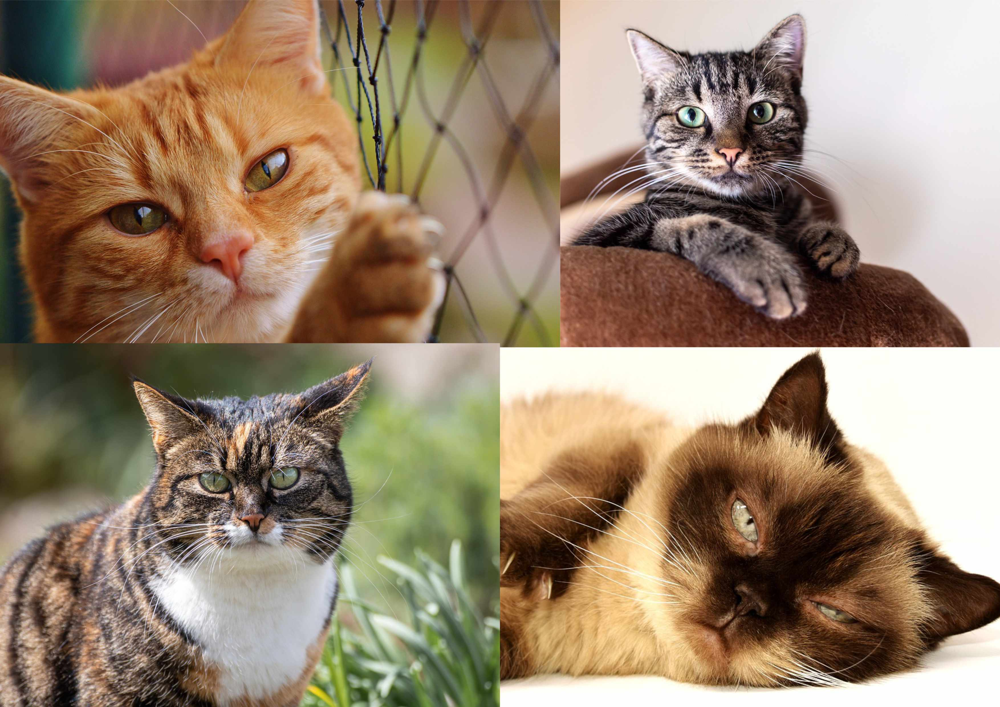
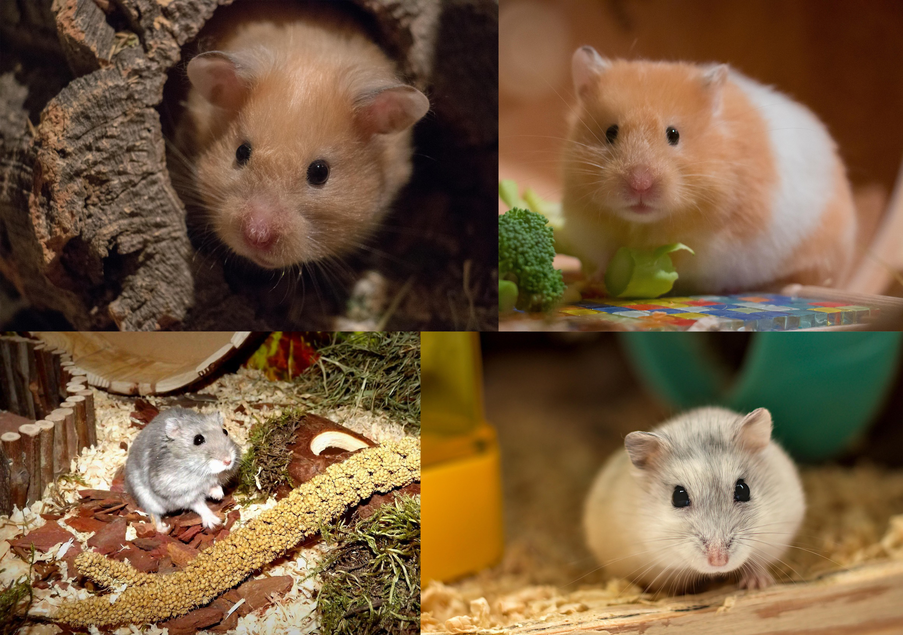

Leggyakoribb házi kedvencek
Kutya
.jpg "Kutyák")
A kutya az egyik legősibb háziállat, az ember hű társa már több ezer éve. Számos fajta létezik, amelyek különböző méretűek, külsejűek és temperamentumúak. A kutyák társas lények, igénylik a törődést, a rendszeres sétát és a közös foglalkozást. Nagy jelentősége van a megfelelő nevelésnek és a szocializációnak, hogy kiegyensúlyozott és barátságos házikedvenccé váljanak.
Alapvető szükségletek:
- Minőségi táplálék és friss víz
- Napi mozgás (séta, játék)
- Rendszeres állatorvosi ellenőrzés
- Nevelés és tanítás
- Kapcsolat és szeretet gazdájával
Átlagos élettartam: 10–15 év (fajtától függően)
Macska
A macskák függetlenebb természetű állatok, de erősen tudnak kötődni gazdájukhoz. Kiváló vadászösztönnel rendelkeznek, sok időt töltenek pihenéssel, és szeretik a saját területüket biztonságban tudni. A lakásban tartott macskák számára fontos a mászás, kaparás és játék lehetősége biztosítva, hogy levezessék energiájukat és kielégítsék ösztöneiket.
Alapvető szükségletek:
- Minőségi macskaeledel és friss víz
- Kaparófa és játszási lehetőségek
- Alomtálca rendszeres tisztítása
- Állatorvosi oltások és féregtelenítés
- Törődés és nyugodt környezet
Átlagos élettartam: 12–18 év (lakásban akár több)
Papagáj

A papagájok intelligens, társas madarak, sok fajnál hosszú élettartammal. Kedvelik a kommunikációt, gyakran taníthatók hangutánzásra és egyszerű szavakra. Lakásban tartva szükségük van nagy és biztonságos kalitkára, valamint rendszeres kiengedésre, hogy repülhessenek. Mentálisan aktív állatok, így fontos a játékok és az ingergazdag környezet biztosítása.
Alapvető szükségletek:
- Tágas kalitka és napi repülési lehetőség
- Változatos, friss gyümölcsökkel kiegészített étrend
- Társas foglalkozás (gazdával vagy más papagájjal)
- Játékok, rágcsálnivalók a szellemi stimulációhoz
- Rendszeres, gyengéd szelídítés és kommunikáció
Átlagos élettartam: fajonként változó (pl. hullámos papagáj 8–14 év, nagytestű akár 40+ év)
Hörcsög
A hörcsög kisméretű, éjszakai életmódot folytató rágcsáló. Általában magányosan szeret élni, ezért egyedül ajánlott tartani őket. Szükségük van tágas ketrecre, futókerékre és búvóhelyekre, ahol elrejtőzhetnek. Kedvelik, ha rágcsálhatnak, így foguk természetes módon kopik. Mivel éjszaka aktívak, nappal többnyire pihennek.
Alapvető szükségletek:
- Kényelmes, búvóhelyekkel ellátott ketrec
- Futókerék és játékok
- Speciális hörcsögeleség és friss víz
- Rágni való faágak vagy játékok
- Gyengéd, fokozatos hozzászoktatás a kézhez
Átlagos élettartam: 2–3 év
Összegzés
| Állat | Társas igény | Mozgásigény | Gondozás nehézsége | Átlagos élettartam |
|---|---|---|---|---|
| Kutya | Nagyon magas | Magas | Közepes–magas | 10–15 év |
| Macska | Közepes | Közepes | Közepes | 12–18 év |
| Papagáj | Magas | Magas (repülés) | Magas (mentális igény) | 8–40+ év |
| Hörcsög | Alacsony (magányos) | Közepes (éjszakai) | Alacsony–közepes | 2–3 év |